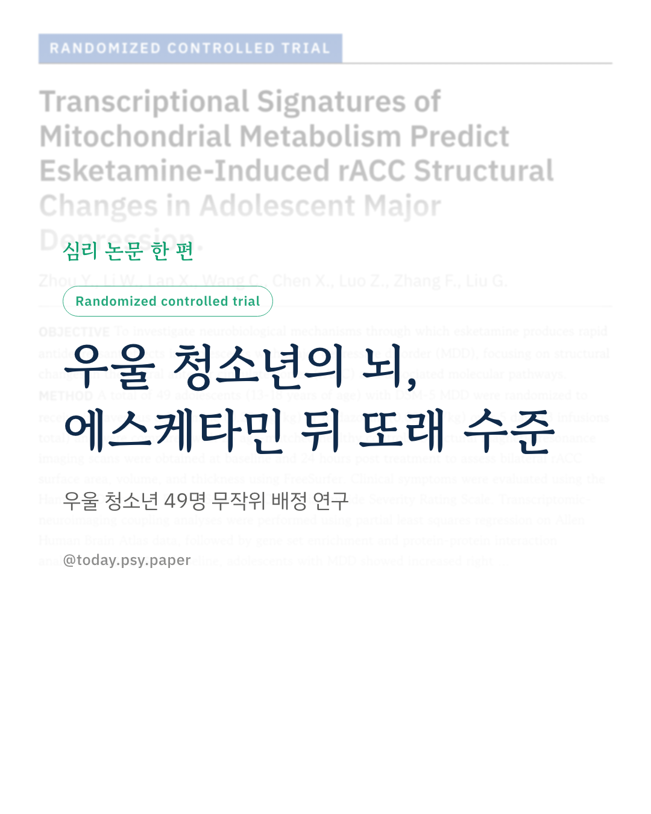
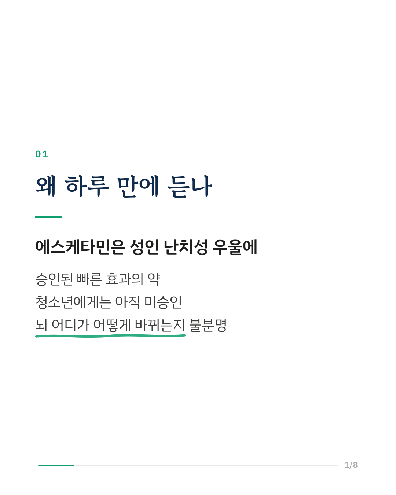
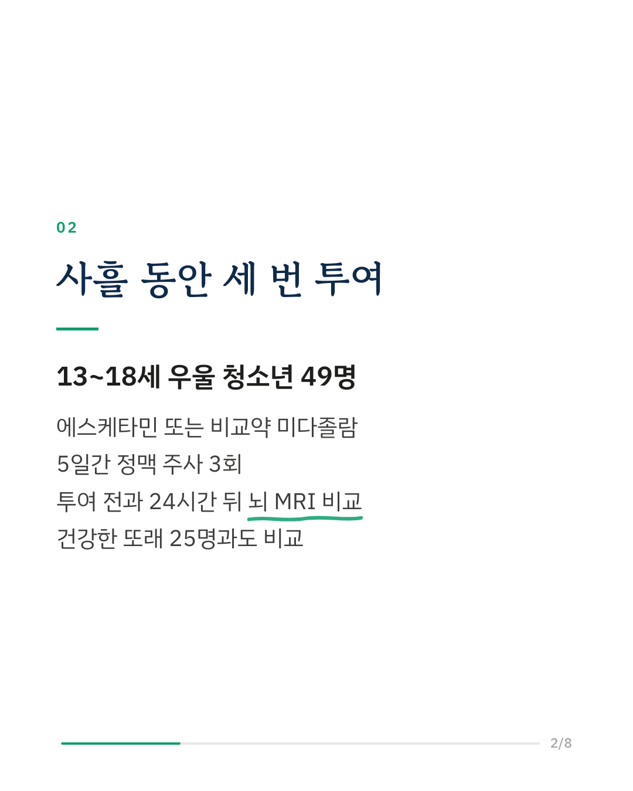
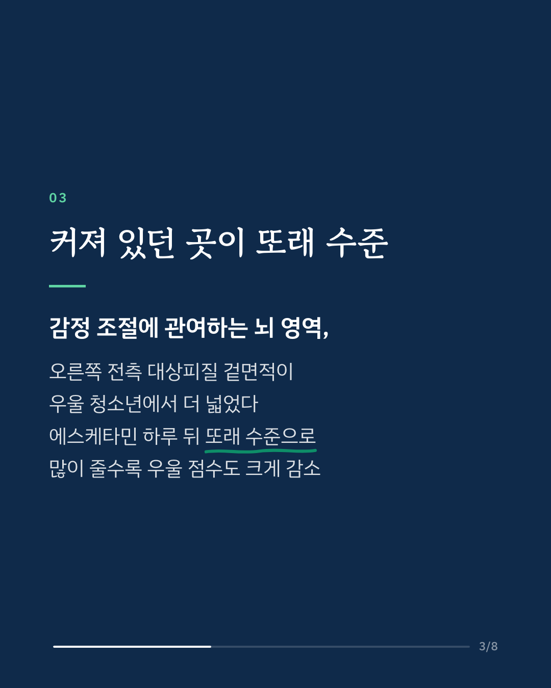
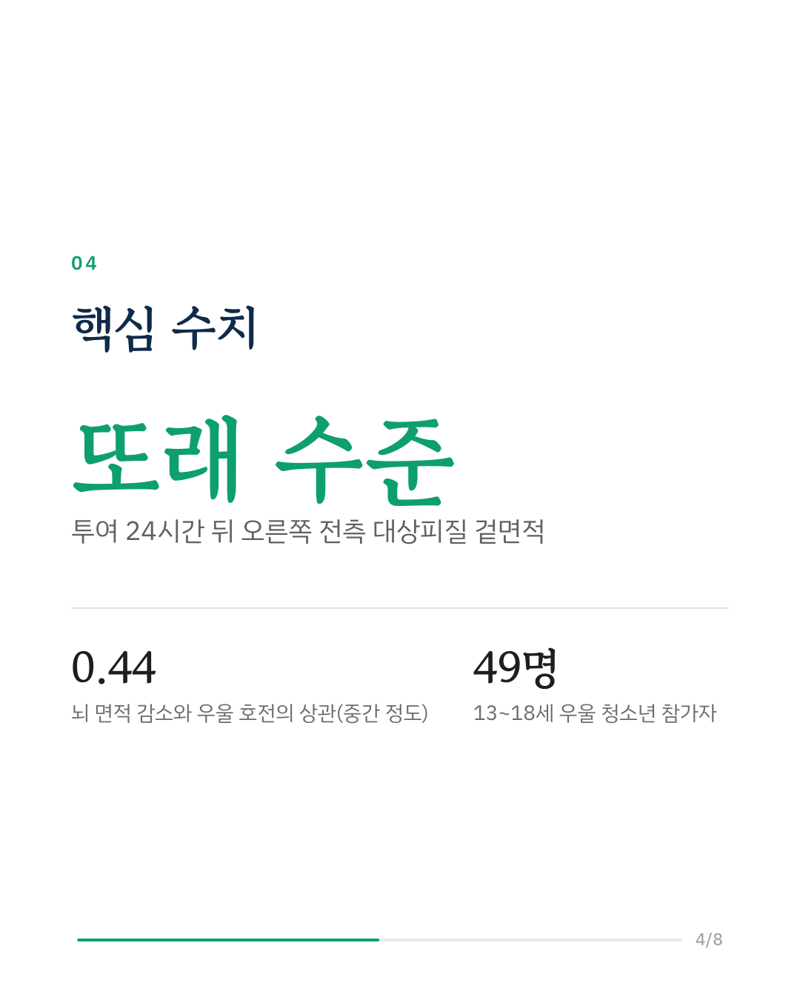
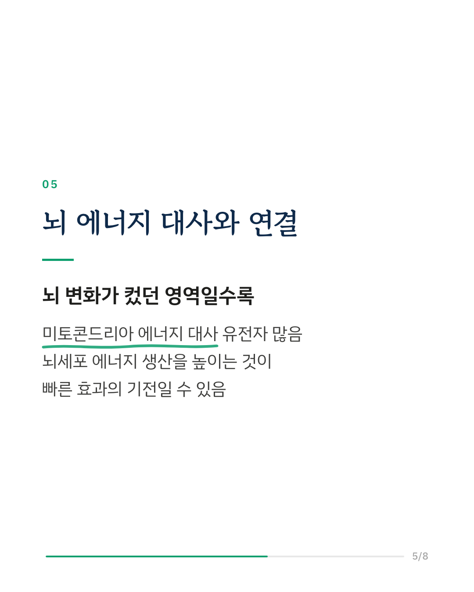
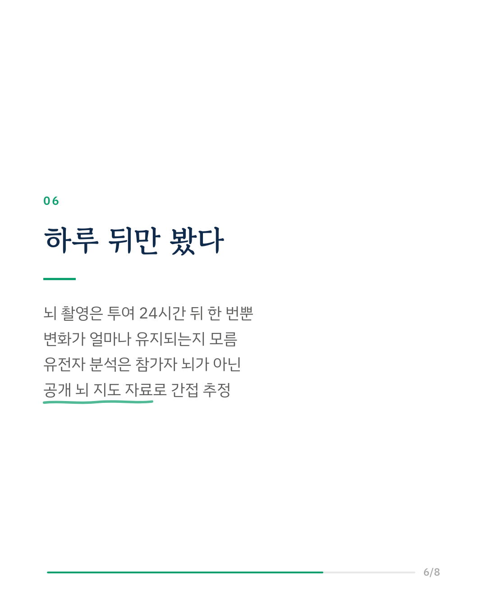
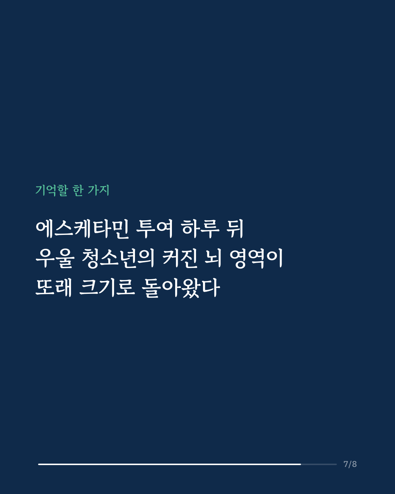
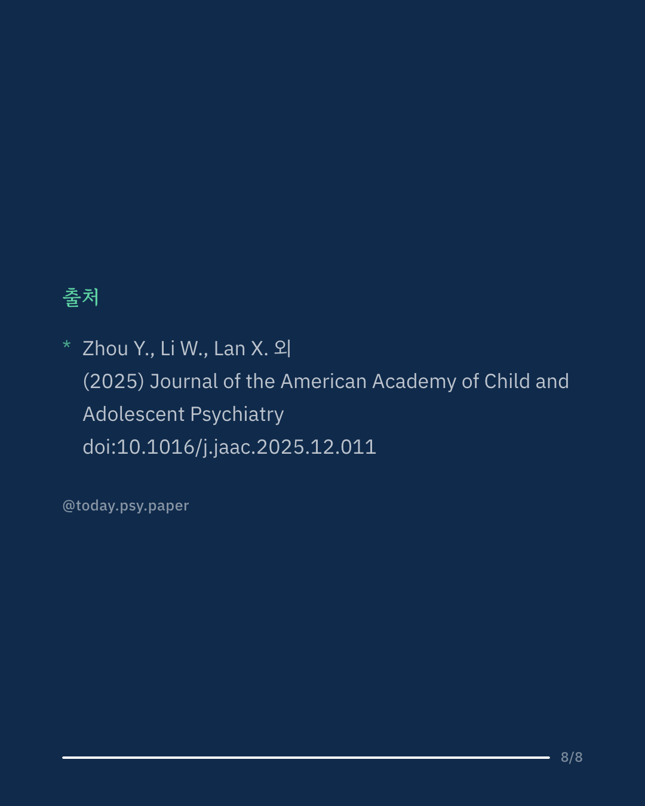

에스케타민은 성인 난치성 우울증에 승인된 빠른 효과의 항우울제이지만, 청소년에게는 아직 승인되지 않았습니다. 이 연구는 청소년 우울증에서 에스케타민이 뇌의 어느 부위를 어떻게 바꾸는지 확인하려 했습니다. 13~18세 주요우울장애 청소년 49명을 에스케타민 또는 비교약(미다졸람) 집단에 무작위로 배정해 5일 동안 정맥 주사를 3회 하고, 투여 전과 마지막 투여 24시간 뒤에 뇌 MRI를 찍었습니다. 건강한 또래 25명의 뇌 영상과도 비교했습니다. 우울 청소년은 감정 조절에 관여하는 오른쪽 전측 대상피질의 겉면적이 건강한 또래보다 넓었습니다(중간 정도 크기의 차이). 에스케타민을 맞은 뒤에는 이 면적이 또래와 비슷한 수준으로 작아졌고, 집단과 시점을 함께 본 분석에서도 이 변화는 뚜렷했습니다(효과 크기 큰 편). 면적이 많이 줄어든 청소년일수록 해밀턴 우울 척도 점수도 더 크게 떨어졌습니다(상관 0.44, 중간 정도). 연구진은 공개 뇌 유전자 지도(Allen Human Brain Atlas)와 겹쳐 보았고, 뇌 변화가 컸던 영역일수록 미토콘드리아 에너지 대사(산화적 인산화, TCA 회로) 관련 유전자 활동이 활발했습니다. 에스케타민이 뇌세포의 에너지 생산을 높이는 것이 빠른 효과의 기전 중 하나일 수 있다고 해석합니다. 다만 뇌 촬영은 투여 24시간 뒤 한 번뿐이어서 변화가 얼마나 유지되는지는 알 수 없고, 유전자 분석은 참가자 본인이 아닌 별도 공개 자료로 간접 추정한 것입니다. 출처: Journal of the American Academy of Child and Adolescent Psychiatry (2025), 'Transcriptional Signatures of Mitochondrial Metabolism Predict Esketamine-Induced rACC Structural Changes in Adolescent Major Depression' DOI: 10.1016/j.jaac.2025.12.011 #임상심리 #정신건강정보 #심리학연구 #논문리뷰 #청소년우울 #에스케타민 #케타민 #뇌과학
python3 publish.py 41482174